THE DASHBOARD PET MANUAL · NO. 01
HATCH AT
HOME!
A tiny friend. A whole little life.
Your quick-start guide to hatching, caring for, and growing up with a pixel pal in Home Assistant.
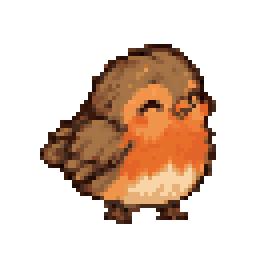
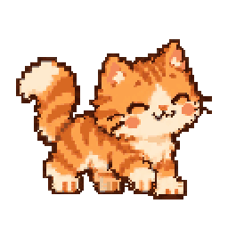
✦★
FLIP • READ • PLAY
WOODLANDHEARTHTERRARIUMTIDEPOOLPONDNIGHT SKY
01
01 · A NEW LITTLE ROOM
Pick a world.
Meet an egg.
Every pet gets its own tiny device and a world full of possible friends. You don’t need to pick the creature first—the egg can surprise you.
In Home Assistant
Settings → Devices & services → Add integration → Virtual Pet.
Name your pet & choose a world
The world sets the device theme and the available creatures.
Add the pet shelf card
Edit a dashboard → Add card → Hatch at Home pet shelf.
WOODLANDBirds, forest friends & an egg-shaped toy
HEARTHCozy companions & a little house
TERRARIUMScales, shells & a sunny habitat
TIDEPOOLOcean pals behind a porthole
PONDFreshwater friends on a lily pad
NIGHT SKYNocturnal pals under a crescent moon
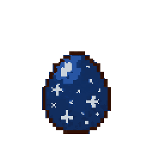
And then?
Give the egg about 30 minutes. It hatches into a creature from that world’s available roster. Add another Virtual Pet if you want another device.
02
02 · BUTTONS ARE LITTLE PROMISES
Care for your
new pal
Tap a toy button under the screen. The pet reacts right away—and its stats change behind the scenes.
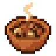
MEALFill an empty tummy.
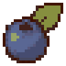
SNACKA little treat between meals.
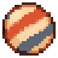
PLAYChoose a quick mini-game.
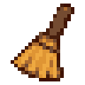
CLEANScoop up mess; freshen the room.
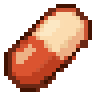
MEDICINEOnly lights up when your pet is sick.
PRAISECelebrate good behavior.
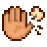
SCOLDFor a fake call, not a real need.
BEDTIMELights out tucks them in; tap again to wake.
READ THIS METER RIGHT!
The hunger meter measures fullness. A high number means “stuffed,” not “starving.” The status screen shows the meters and hearts.
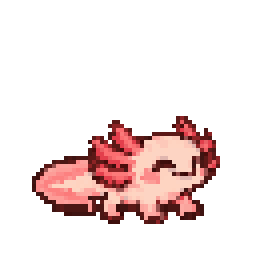
TAP → REACTION → HAPPY DANCE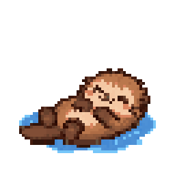
03
03 · LEARN THE LITTLE SIGNALS
What’s that
call about?
Your friend can call when it needs something. Peek at the screen—the speech bubble and mood tell you what’s up.
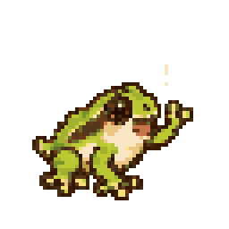
It’s asking for you!
Hungry, bored, or sleepy calls stay open for about 20 minutes. Tap the matching button to answer.
♥ HEARTSHappiness / how it feels
◉ ENERGYPlay, rest, repeat
✦ CLEANLINESSMess on screen? Clean up.
☁ MOODA quick clue, not a diagnosis
THE BUBBLE IS THE CLUE.
Tap the screen for the status view. If an action is refused, the pet tells you why—like “I’m full!” or “I’m not sick.”
Little things count, too
Clean mess, give medicine when needed, and offer praise or a fair scold. Care shapes the pet’s upbringing over time.
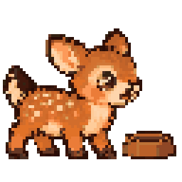
04
04 · PLAYTIME!
Two games.
Five turns.
One happy pal.
Tap Play and choose a game. Each round is quick; get three right answers out of five to win.
GAME A
Left or right?
←The pet hides on one side. Guess where it went!
→
GAME B
Higher or lower?
7 ?
Will the next number be higher or lower?
WIN OR LOSE, IT’S PLAY THAT COUNTS.
Games bring your pet together with you. A win gives its happiness an extra boost. Tap ✕ if you want to stop early.
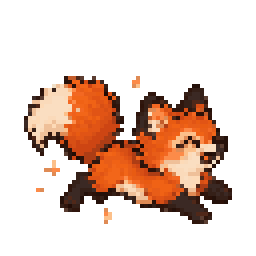
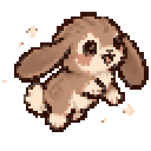
05
05 · FROM EGG TO OLD FRIEND
Growing up
is part of it
The days move on at their own pace. Care, play, and what your pet learns along the way help shape who it becomes.
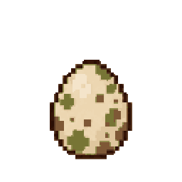
EGGabout 30 min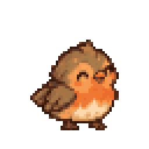
BABYfirst dayCHILDaround day 1
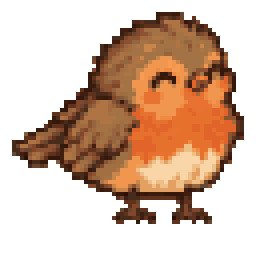
TEENaround day 5
Then comes adult
Around day 14, your pet reaches adulthood. Its upbringing settles into a path, and its personality starts to show as a teen.
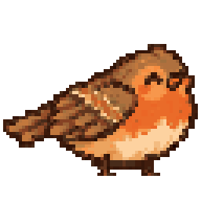
A NEW GENERATION?
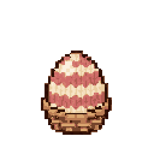
From day 21, a well adult at home can lay an egg. Choose a surprise or pick a creature for the next hatch. The journal keeps your family history.
TRAITS ARE LITTLE MEMORIES.
Your home and routines can teach lasting traits—like music lover, early bird, or fireside friend.
06
06 · HOME IS PART OF THE ADVENTURE
Your house
has a fan club
Connect optional Home Assistant things in “What your pet notices”. Then your little pal can react to the rhythms of your home.
☂ WEATHERRain, snow, sunshine and thunder change the scene or mood.
☼ TEMPERATUREToo warm? A little sweat. Too chilly? A shiver and blanket request.
♫ MUSIC & TVIt may dance to music or watch its favorite show.
☾ LIGHTSAt bedtime, the room dims and your pet settles in.
⌂ PEOPLEWhen you come home, expect a very happy hello.
✓ CHORESA finished task can earn a tiny treat.
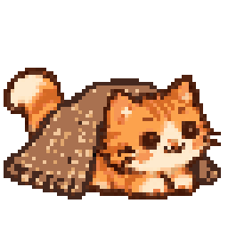
All connections are optional
Your pet works without any of these. Add only the sensors and devices you want it to notice.
THUNDER CAN MAKE IT JUMP—BUT YOUR HOUSE CAN’T HURT IT.
Home events change scenery, mood, and requests. The pet is safe, even when the forecast is not.
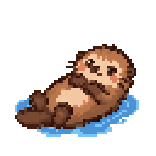
07
07 · YOUR LITTLE DAILY SURPRISE
Look in.
There’s a story.
A pet has a life between visits, and the card keeps the little moments easy to find.
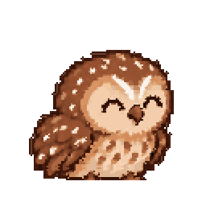
Tap the screen
Open the status view for meters, age, traits, upbringing, personality, recent care, and the next egg. Tap again to return.
★ WISH OF THE DAYA small hope you can grant together. Missing it costs nothing.
☁ A DREAMSometimes a dream retells something from yesterday.
⌂ WHILE YOU WERE OUTCatch up on naps, games, and snacks after time away.
♥ YOUR BONDIt remembers each person who visits. A bond never goes down.
THE GENTLE RULES
Your pet never dies. If nobody’s home, it goes to the sitter and its needs pause. A missed call can count as a care miss, but you can always come back and care for it.
THAT’S THE BASICS!Now go say hello.
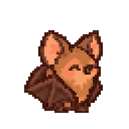
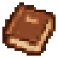
WANT THE DEEP-DIVE MANUAL?
Open the full guide in the project docs for setup, sensors, entities, and every rule.
08